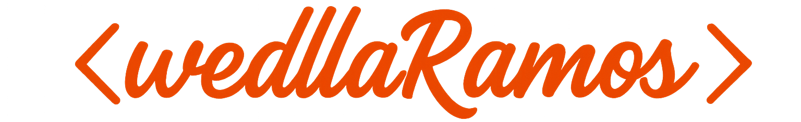
Bem-vindo ao meu Portfólio
Uma mistura bem equilibrada de lógica, intuição e uma vontade persistente de transformar ideias em coisas reais
Olá, eu sou Wedlla Ramos
Sobre mim
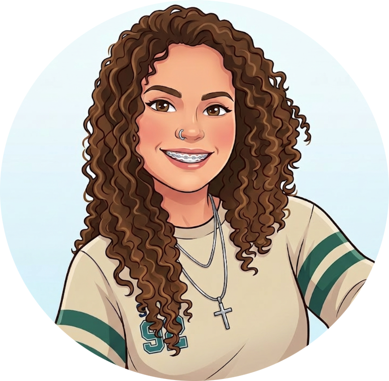
Gosto de projetos que desafiam, linhas de código que contam histórias e soluções que fazem o dia de alguém ficar um pouquinho mais fácil.
Não acredito em caminhos prontos — acredito em construir os meus. É por isso que vivo explorando novas tecnologias, testando possibilidades e me jogando em projetos que me tiram do comum. Se algo me desperta curiosidade, já estou aprendendo; se me desafia, melhor ainda.
Adoro criar experiências que funcionam, que encantam e que fazem sentido. E, entre um bug e outro, continuo movida pela certeza de que cada detalhe importa — porque no mundo da tecnologia, cada pequena decisão muda tudo. No fim das contas, sou alguém que transforma café em código, ideias em projetos, e desafios em oportunidade de crescer.
Minhas Habilidades
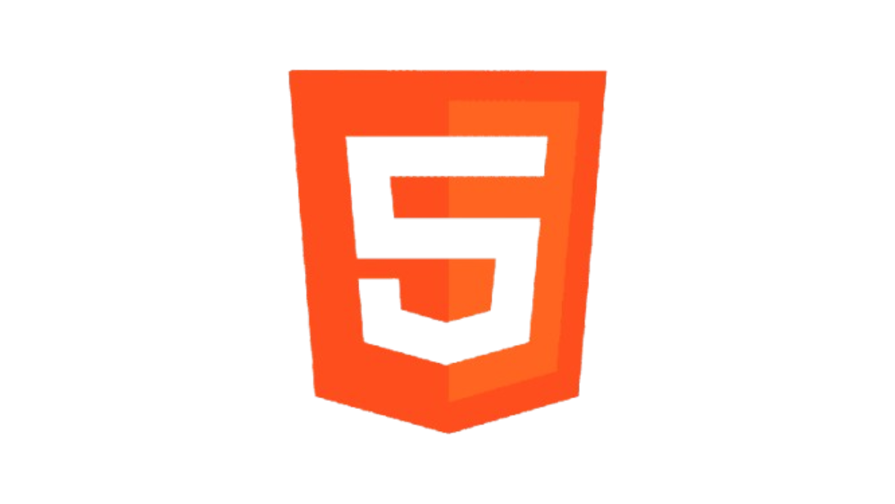
HTML5
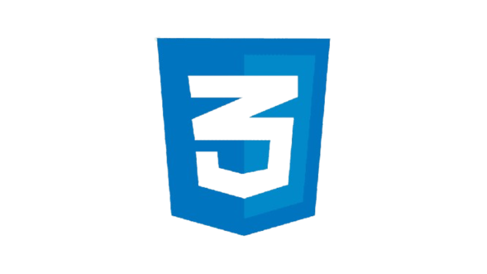
CSS3
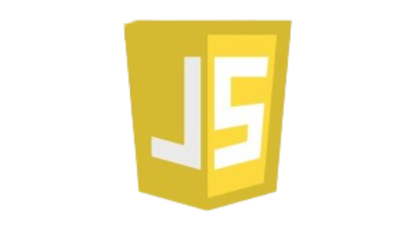
JavaScript
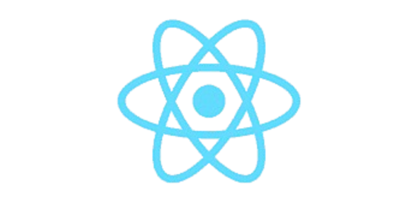
React
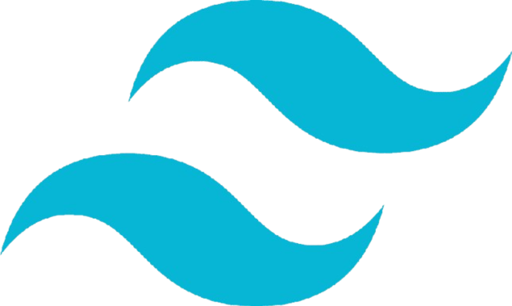
Tailwind CSS
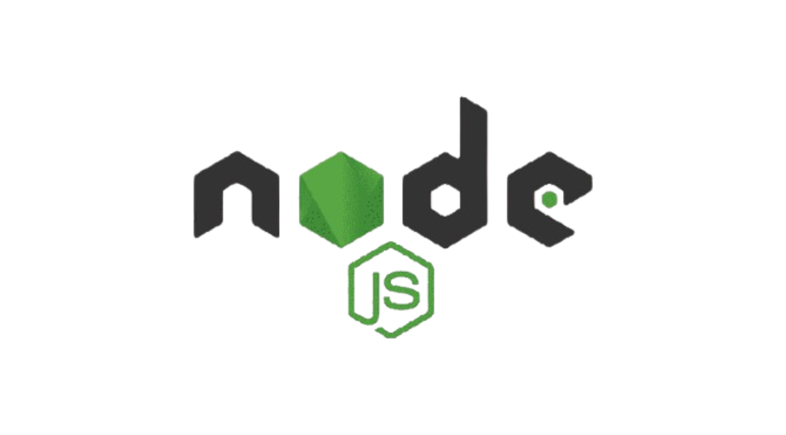
Node.js

GitHub
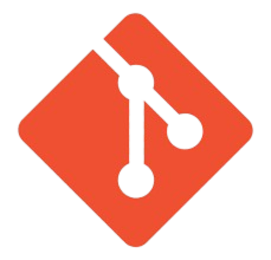
Git
Formação & Estudos
Minha jornada acadêmica e prática na área de tecnologia
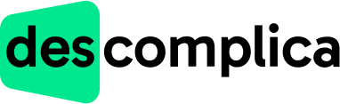
Faculdade Descomplica — Engenharia de Software: Graduação em andamento, construindo base sólida em arquitetura, algoritmos e desenvolvimento de sistemas.
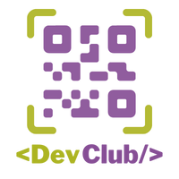
DevClub — Formação Full Stack: Minha base prática vitalícia, focada em projetos reais, front-end, back-end e "mão na massa".
Meus Projetos
Cafeteria Dev
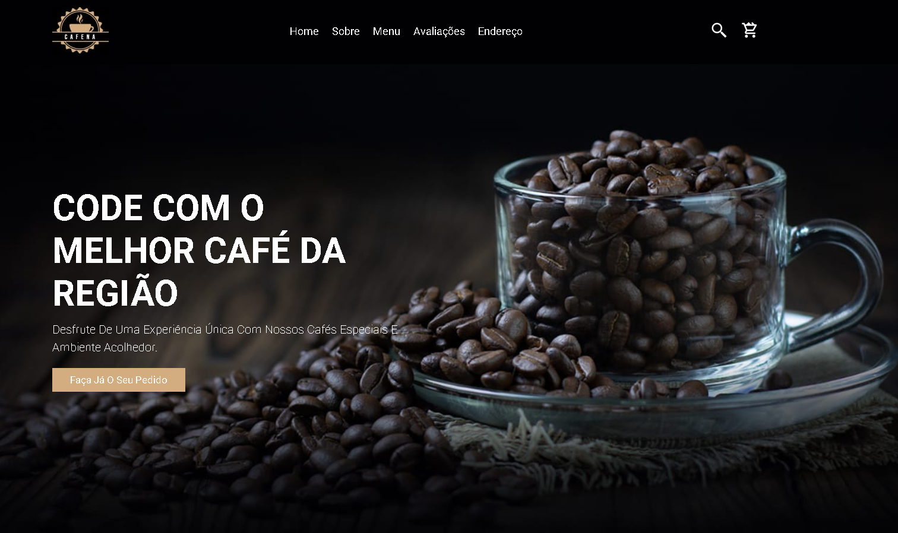
Meu primeiro projeto prático desenvolvido para consolidar minhas primeiras habilidades práticas em HTML5 e CSS3. Criei uma landing page responsiva para uma cafeteria fictícia, aplicando estrutura semântica, organização de estilos, uso de variáveis CSS e layout com Flexbox. O projeto demonstra minha capacidade de aprender rapidamente, transformar conceitos em entregáveis funcionais e manter boa atenção a detalhes e consistência visual.
Encanadores Mario e Luigi
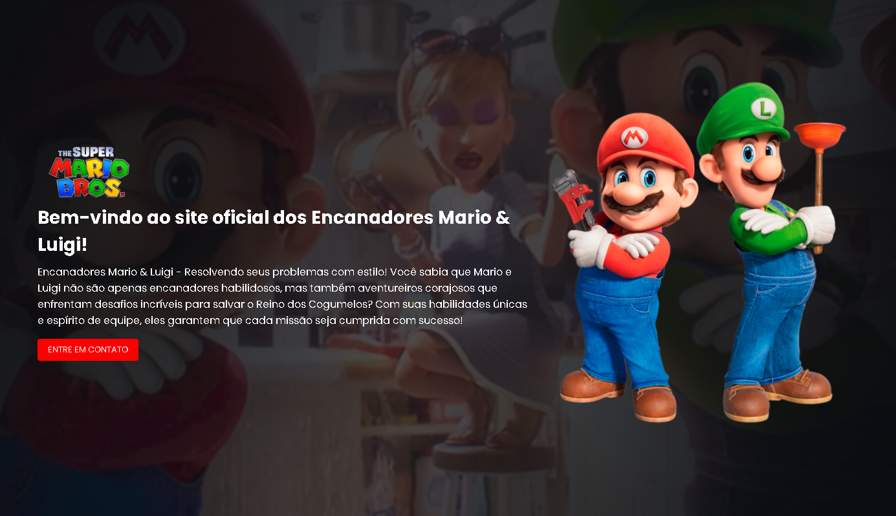
Projeto desenvolvido para aprimorar habilidades práticas em HTML5, com foco especial no uso de formulários interativos. Neste trabalho, implementei campos de entrada, validações básicas, organização semântica e boas práticas de usabilidade, garantindo uma experiência clara e intuitiva para o usuário. O projeto representa meu primeiro contato com manipulação estruturada de formulários, demonstrando minha evolução na construção de interfaces funcionais e preparadas para fluxo de dados.
Refri Page
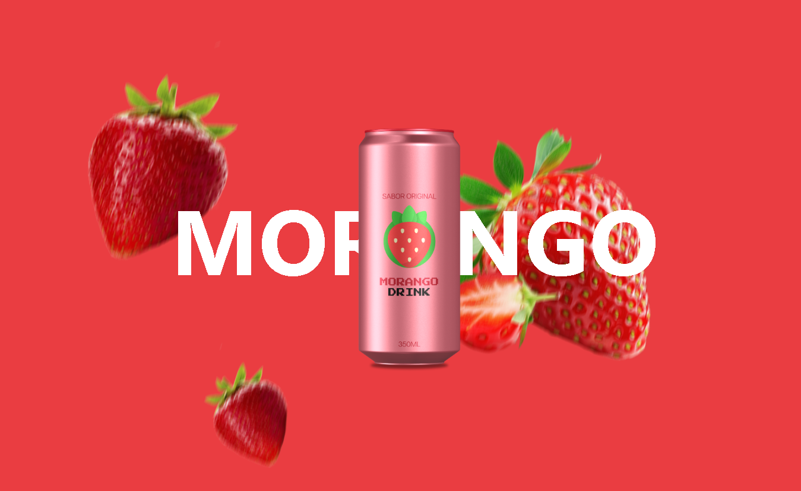
Projeto voltado ao aprimoramento de habilidades em CSS para composições visuais, incluindo posicionamento absoluto, manipulação de camadas (z-index) e criação de cenas com múltiplos elementos gráficos. A interface explora proporções, espaçamentos e distribuição visual para destacar frutas, ícones e embalagens, simulando um layout publicitário. Também inclui uso de sombras, imagens otimizadas, tipografia personalizada, cores temáticas e estrutura responsiva, reforçando minha capacidade de transformar conceitos de design em layouts limpos, organizados e visualmente atraentes usando apenas CSS.
Landing Page - Restaurante Dev
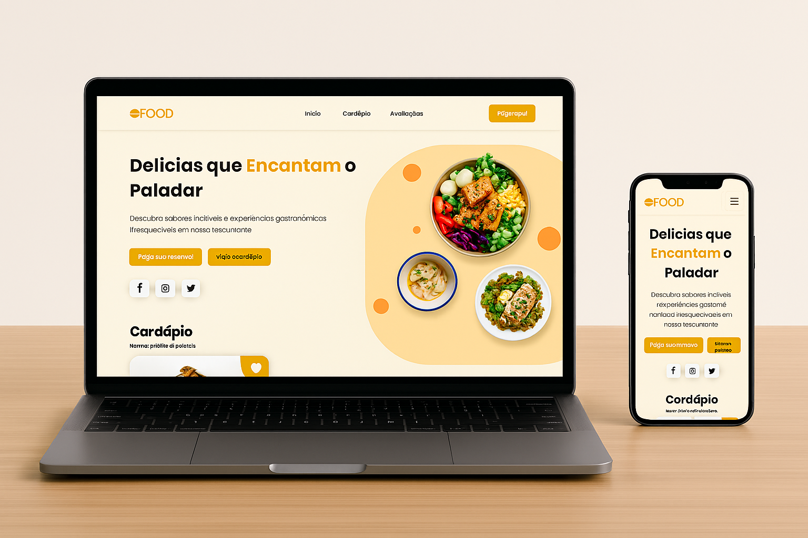
Este projeto marca um avanço significativo na minha jornada front-end, consolidando conhecimentos essenciais de responsividade, animações CSS e organização visual utilizando Grid e Flexbox. A interface foi construída a partir de uma combinação de layouts fluidos, transições suaves e componentes estruturados para garantir uma experiência consistente em diferentes tamanhos de tela. Além disso, utilizei CSS Grid para organizar galerias e seções complexas, posicionamento absoluto para elementos decorativos, animações personalizadas, e padronização visual em menus, cards e depoimentos. O resultado reflete minha evolução em transformar conceitos de design em páginas bem estruturadas, modernas e altamente responsivas.
Cafeteria Responsiva - Best Coffee
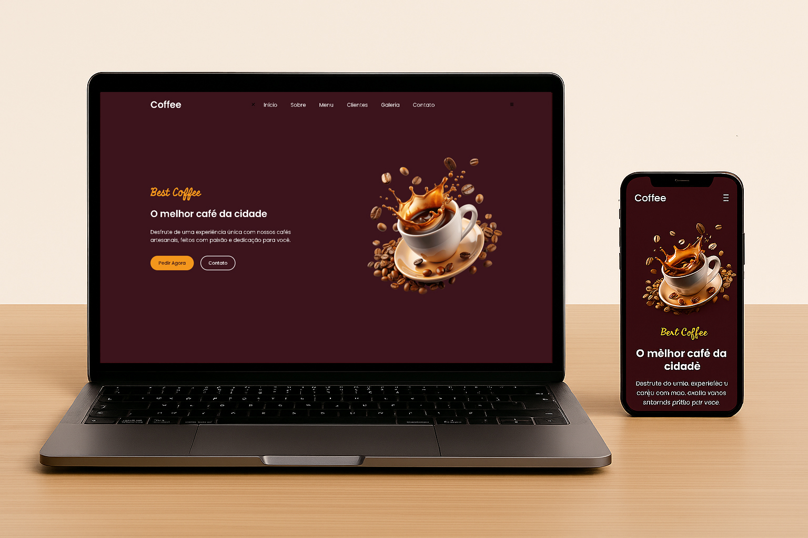
Este projeto demonstra minha capacidade de criar interfaces modernas utilizando HTML, CSS e JavaScript de forma eficiente e escalável. Trabalhei com CSS Grid e Flexbox para estruturar seções complexas, garantindo organização visual e layouts fluidos. Apliquei animações, transições e microinterações para enriquecer a experiência do usuário, além de implementar responsividade completa, adaptando cada seção — incluindo galerias, cards de produtos e depoimentos — para diferentes resoluções.